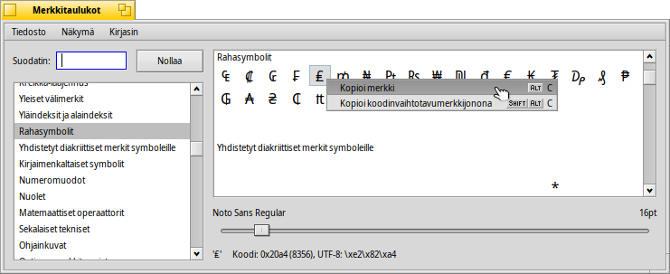

Merkkikuvaus
Merkkikuvaus
| Työpöytäpalkki: | ||
| Sijainti: | /boot/system/apps/CharacterMap | |
| Asetukset: | ~/config/settings/CharacterMap settings |
Merkkikuvaus näyttää kaikki jokaisen Unicode-lohkon kirjasimet.
Vasemmalla on vakiot Unicode-lohkot yhdessä kätevän suodatintoiminnon kanssa.
Valikossa on -valinta, jotka ovat alueita, joihin Unicode-konsortio ei koske. Jos aktivoit -valikon, lohkot eivät ole osa tällä hetkellä harmaana näkyvää kirjasintyyppiä vasemmalla näkyvässä kirjasintyyppiluettelossa eikä oikealla näytetä kirjasimien luetteloa.
Oikealla näytetään näiden lohkojen todelliset merkit käyttäen -valikon määrittelyjä. Voit määritellä, että onko symboli osa tuota kirjasinta (se piirretään mustalla), vai toimittaako järjestelmä korvaussymbolin jostain muusta kirjasintyypistä (silloin se piirretään harmaalla värillä).
Symbolien alla voit vaihtaa symbolin kokoa. Ja sen alapuolella näytetään hiiren kohdistimen alla olevan kirjaimen heksadesimaalikoodi, desimaalikoodi ja UTF-8-merkintätapa.
Voit raahata ja pudottaa merkin suoraan merkkikuvauksesta tekstieditoriin, tai valita hiiren kakkospainikkeella yhden seuraavista vaihtoehdoista: (ALT C) tai (VAIHTO ALT C). Tuloksena on esimerkiksi joko € tai \\xe2\\x82\\xac.
Symbolin napsauttaminen näyttää suurennetun näkymän siihen, uudelleennapsautus sulkee näkymän.